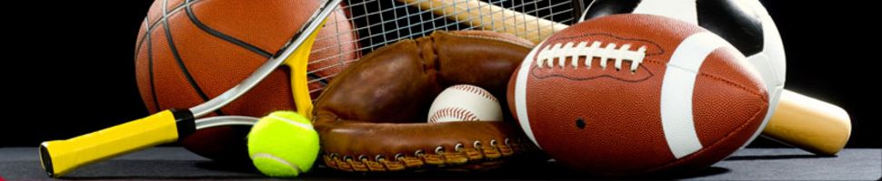
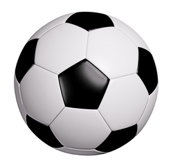

 Mes débuts en sport (interdiction de rire !!)
Mes débuts en sport (interdiction de rire !!)
 Mon tout premier sport : aaaah ! quel merveilleux souvenir que de se prendre la balle dans la tête ou de trébucher dessus.
J'imagine que tout le monde a compris de quel sport je suis en train de parler; celui que tout le monde aime et dont les professionnels sont énormément surpayée pour jouer sur ce grand espace vert,
qui pourrait peut-etre servir d'espace pique-nique à la place (franchement c'est une super idée, vous trouvez pas !... La je sens que pas mal d'entre vous ont envie de me donner un bon coup de poing...).
Enfin bon laissons tomber tout ça. Bien sûr, je parle du football !! (bon l'image donnait déjà la réponse mais bon, pour le fun ^^) J'ai joué pour la première fois quand j'étais tout petit riquiqui (pas besoin de connaitre mon age), et j'ai tout de suite compris que je n'avais
pas la fibre pour ce sport. D'ailleurs, j'étais tellement lamentable qu'au final je jouais toujours avec les filles pour me remonter le moral (c'est une bonne tactique pour être entouré de filles en tout cas)!
Ma première expérience au sport n'a pas été complètement réussi mais il m'en faut plus que ça pour me décourager et c'est pourquoi *roulement de tambour* j'ai arreté le foot pour faire du ping-pong... (bon c'est pas le
même sport mais c'est pas si mal). Tenir une petite raquette dans sa main, à la fois pour jouer mais aussi pour se défendre contre les agresseurs (je suis sûr que c'est très efficace !).
Bon, par la suite, je me suis essayé à plein d'autres sports tels que le badminton, le tennis, le basketball, le handball, la course, le squash etc... Pour résumer un peu, j'ai fait pas mal de sport de raquette (surtout pour l'arme camouflé que l'on peut transporter dans sa housse hyper chère). Pour finir, je vous invite à pratiquer souvent, quel que soit le sport pour vous garder en forme. Bien que parfois, on en ressort en fait plus mal en point. A la prochaine pour mes prochains récits!!!